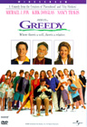

Universal/1994/104m/ANA 1.85

The running joke that fuels Greedy is a family of bickering cousins dutifully praying for the demise of rich Uncle Joe while cunningly currying his favor at the expense of the other family members. The cousins are quite funny once around, but just as Uncle Joe does, we tire of them pretty easily.Michael J. Fox turns in a workmanlike performance as Danny McTeague, a pro bowler developing an arthritic wrist. What's best about Greedy, though, is watching Kirk Douglas work. The septuagenarian still manages to dominate the screen. He plays the comedy straight, but Uncle Joe McTeague turns out to be one savvy cantankerous fraud. Jonathan Lynn, the director, is a hilarious asset playing McTeague's acerbic manservant and Olivia d’Albo keeps Uncle Joe stimulated in his off screen hours.
Transferred with anamorphic purity, Greedy looks terrific on DVD. The lively, bright palette of director Jonathan Lynn provides plenty of snap to translate into an outstanding DVD. Consistently vivid colors complimented by very sharp images combine with solid surround sound to make Greedy an excellent DVD.